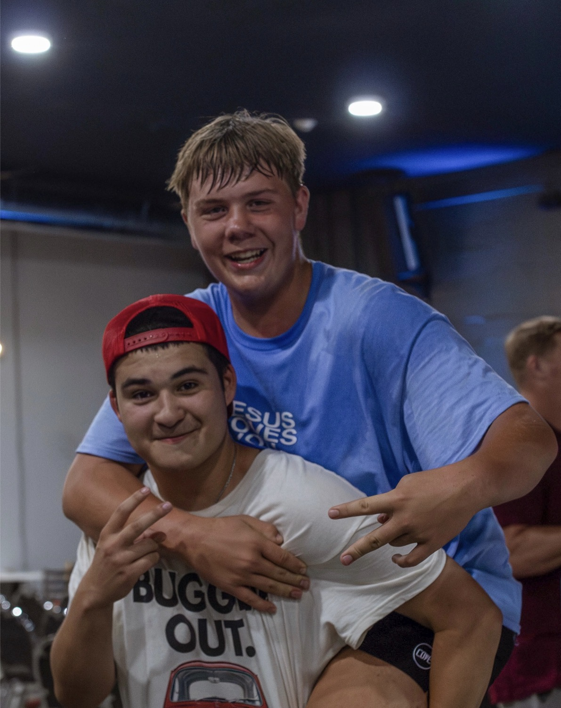

Faith. Friends. Purpose.
Champion YTH is a place for sixth through twelfth grade students to encounter God, build real relationships and discover their identity and purpose in Christ.

Worship
Students learning to know and respond to God's presence.
Community
Real friendships and a place to belong.

Purpose
Students equipped to live boldly for Christ.